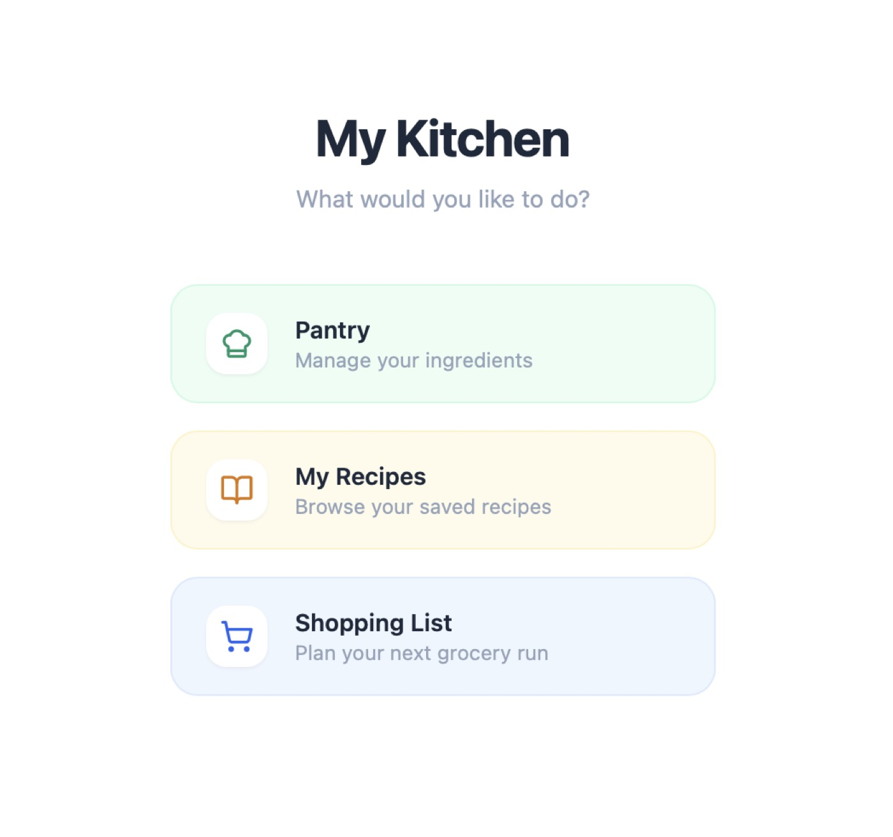
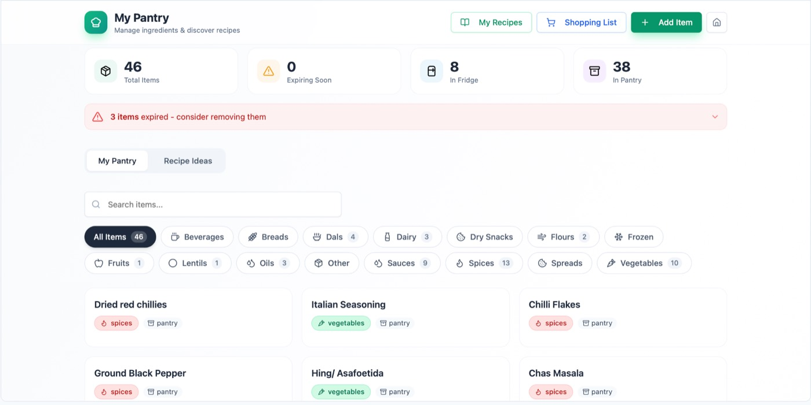
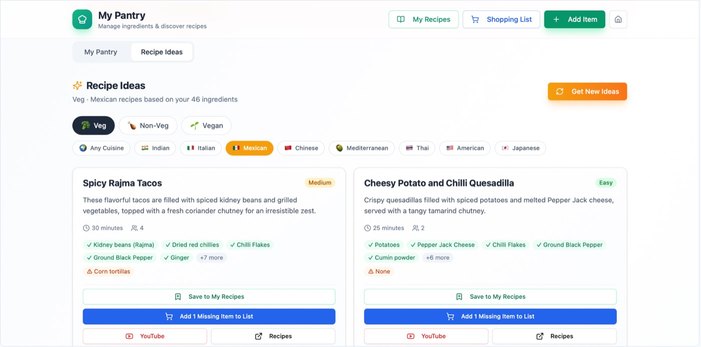
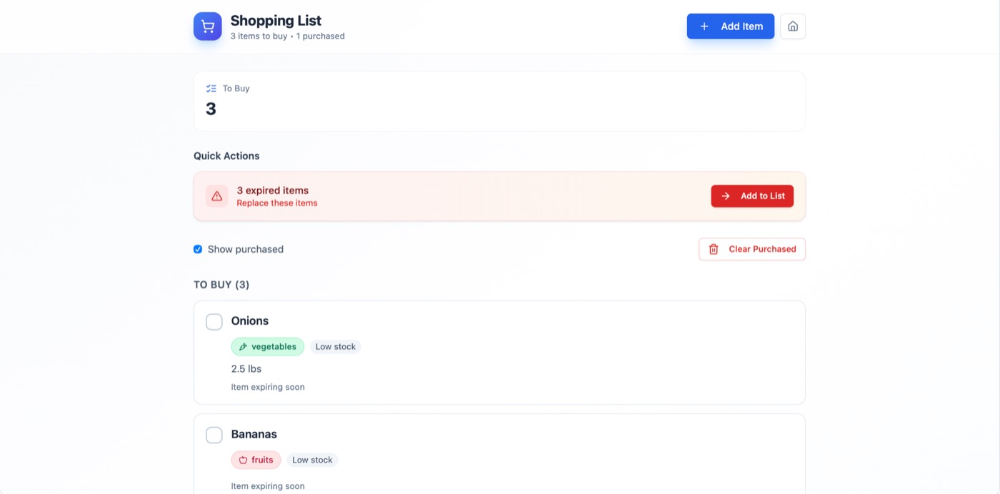
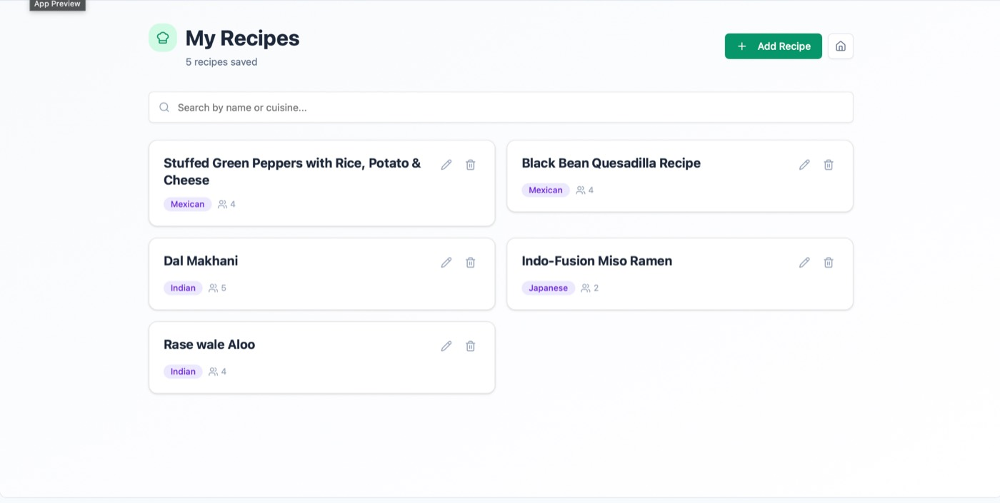

The goal was to create a lightweight system that could generate recipe ideas
in under a minute based on ingredients already available in the pantry.
What began as a pantry and grocery workflow tool gradually evolved into a
broader cooking companion focused on reducing meal-planning friction,
simplifying shopping management, and creating a more personalized cooking
experience.
The product now includes pantry management, shopping list workflows, and an
in-progress recipe feature designed to help users save recipes and track
personal modifications over time.
The Challenge
Meal planning often requires switching between multiple apps, manually
checking ingredients, and repeatedly searching for recipes based on what
is available at home.
The challenge was creating a system that could:
quickly suggest meals from existing pantry items
reduce unnecessary grocery purchases
simplify shopping workflows
connect pantry management with meal planning
support recipe personalization over time
The product needed to stay fast, lightweight, and practical enough for everyday use.
My Role
I led the product from concept through workflow design, feature
prioritization, and iterative expansion.

Key Responsibilities
Identified the core user problem and designed the initial workflow
Structured pantry and shopping list management systems
Prioritized feature expansion based on evolving user needs
Focused on usability and low-friction interactions
Managed iterative product improvements and workflow refinement
Balanced simplicity with long-term product scalability
Product Evolution
01 Pantry-Based Recipe Discovery
The first version focused on answering one question quickly:
“What can I cook with what I already have?”
Users could manage pantry items and receive recipe ideas based on available
ingredients, reducing the time spent deciding what to cook each day.
The primary objective was speed and simplicity — helping users move from
pantry to meal idea in under a minute.


02 Shopping Workflow Integration
The product later expanded to include grocery list functionality.
Users could:
add missing ingredients directly to a shopping list
organize grocery planning more efficiently
connect meal planning with purchasing workflows
reduce duplicate or forgotten purchases
This created a more connected end-to-end kitchen management experience.

03 Personalized Recipe Management (Work in Progress)
The latest expansion introduces in-app recipe saving and management.
The goal is to allow users to:
save recipes they enjoy
revisit frequently cooked meals
track personal tweaks and adjustments to recipes
build a more personalized cooking system over time
This feature is currently in progress as the product continues evolving
around real cooking habits and workflows.

Outcomes
Built a lightweight pantry-first meal planning workflow
Reduced friction between pantry tracking and grocery planning
Expanded the product through iterative feature development
Created a connected system around cooking, shopping, and recipe organization
Strengthened practical product thinking through continuous workflow refinement
What This Project Strengthened
This project strengthened my ability to:
Design workflows around real user behavior
Expand product scope incrementally without increasing complexity
Prioritize features based on practical value
Translate everyday problems into structured product solutions
Balance usability, iteration, and scalability in product development
Core Skills Demonstrated
Product Thinking · Workflow Design · Feature Prioritization ·
User-Centered Design · Iterative Development · Systems Thinking · Product
Operations · UX Strategy · Process Simplification · Lightweight Automation